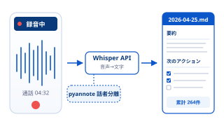
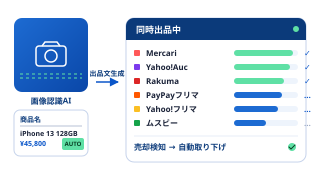
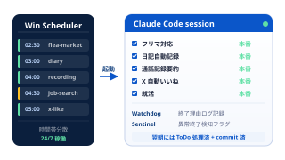
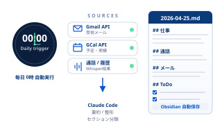
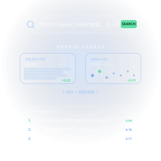

Voice → AI Pipeline
通話記録 自動要約パイプライン
通話録音 → Whisper APIで自動文字起こし → 話者分離 → AI要約・次のアクション生成 → Obsidian自動保存。タスクスケジューラで5分ごとに無人実行。

営業実務の現場感と、AIエージェント実装スキルを掛け合わせる。
単発のプロトタイプではなく「他者が継続して使える」状態まで届けることに、こだわっています。
AIを万能視せず、
業務の現場感と、エージェント実装力を
橋渡しする立場として。
現職では営業部でWebマーケティング内製化とAI活用推進に携わり、業務課題の発見からAI自動化システムの要件定義・実装・社内展開までを担っています。個人事業主としても法人営業支援会社と業務提携し、法人リード提供事業を運営しています。
個人環境でも通話記録自動要約・フリマ6サイト管理（一部機能稼働中）・24時間自律AIエージェント基盤・日記自動記録・RAG基盤など複数のAIシステムを並行して構築・運用中。単発のプロトタイプではなく「他者が継続利用できる状態まで届ける」ことを重視しています。
生成AIの弱点（情報の画一化・独自性欠如）を理解した上で人間と役割分担を設計する立場として、AIコンサル・AI活用支援職へのキャリアチェンジを目指しています。
通話要約・フリマ管理・自律エージェント基盤・日記自動記録・RAG基盤など、 要件定義から運用までを一人で進めています（一部は本番運用中・一部は開発継続中）。

通話録音 → Whisper APIで自動文字起こし → 話者分離 → AI要約・次のアクション生成 → Obsidian自動保存。タスクスケジューラで5分ごとに無人実行。

商品写真 → AI画像認識で商品名特定 → 出品文章自動生成 → 相場調査 → 6サイト一括出品。売却検知 → 他サイト自動取り下げまでをコアフローに据え、各機能を段階的に実装・稼働中。GUI 大半・商用化は未着手。

Windowsタスクスケジューラで時間帯を分散して定期起動し、夜間・早朝に Claude Code セッションを自動実行。フリマ対応・日記自動記録・通話記録・就活の4プロジェクトで本番運用中。翌朝にはToDoが処理済み・commit済みの状態に。

毎日0時にセッション履歴・Googleカレンダー・通話文字起こし・メールを自動収集してObsidian日記に集約。複数API統合（Gmail / Google Calendar / Obsidian）と Claude Code による要約・整形。社内日報・業務日誌システムへの転用も可能な構造。
Claude Code / Codex の使用記録を Git コミット・プロンプト履歴から可視化。毎週自動更新で稼働の継続性を数値で示す。
稼働グラフを見る →
営業先リサーチに時間がとられ営業活動がスケールしない課題に対し、Claude Code + Playwright で自動化スクリプトを開発。問い合わせフォーム自動送信・メール直接送信の2チャネルで稼働中。

他部署依頼で数営業日を要するLP・チラシ・画像制作を営業部内で内製化。LP累計9本・チラシ3種1,000枚印刷配布・画像約100枚制作。AI生成＋実写素材のハイブリッドでE-E-A-T対策も両立。

Claude Code とのセッションが毎回リセットされる課題を解決するため、全履歴を永続化・検索可能にするRAG基盤を個人で設計・実装。SQLite FTS5（全文検索）と sqlite-vec（768次元ベクトル検索）のハイブリッド構成で、RRFスコア統合＋時間減衰ランキングを実装。Stop/UserPromptSubmitフックで自動保存。
AI実装に閉じず、ビジネス側の視点や運用設計も自分で持つ。
モバイル通信系企業
個人事業（通信機器小売業）